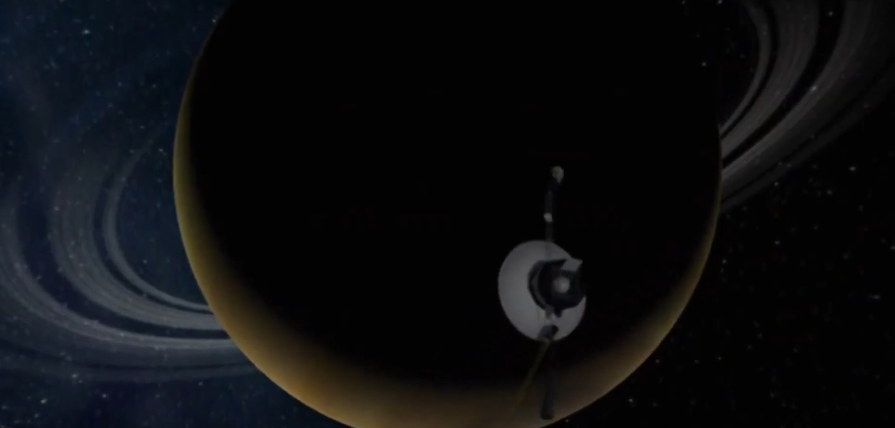

Happy Birthday, Voyager

This year marks the 48th anniversary of the launch of the Voyager 1 and Voyager 2 probes. To celebrate their epic journey through the solar system and to honour the people behind the spacecraft - especially the software engineers - I made this little video. Hat tip to open-source tool kdenlive which I used to edit it.
I particularly recommend the BBC documentary 'Voyage to the Final Frontier', which goes into detail on the problems the engineers had to contend with, and how they managed to fix them from so far away. The song is 'Olalla' by Blanco White.